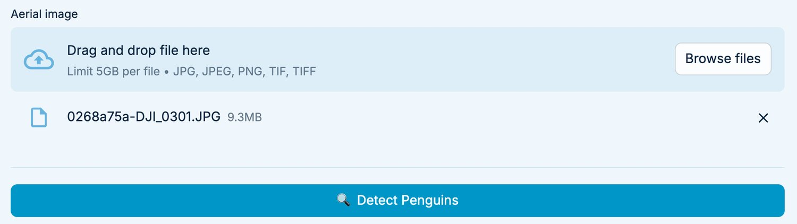
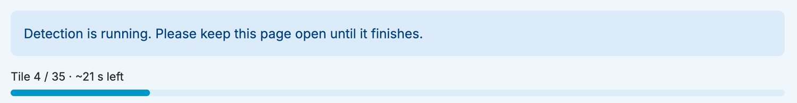
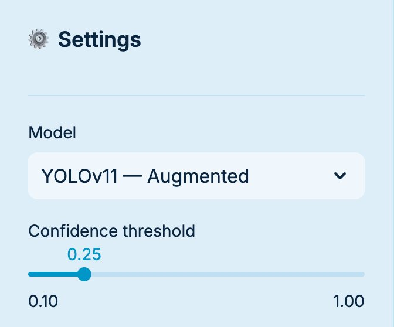
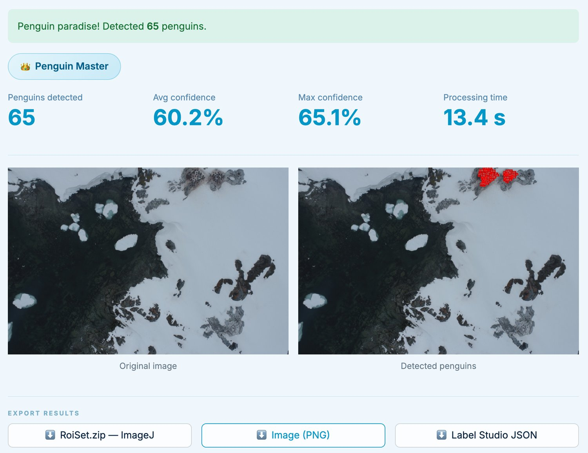

Інструкція для підрахунку пінгвінів на аерофотознімках. Програма працює на вашому комп'ютері без інтернету: знімки нікуди не надсилаються.
Це потрібно зробити лише один раз. Далі програма просто запускається (крок 2).
⏳ Розпакування триває 5–15 хвилин — у програмі багато файлів. Дочекайтеся, поки вікно копіювання зникне.
Розпаковуйте саме в C:\, а не в «Завантаження» чи на робочий стіл: у Windows є обмеження на довжину шляху до файлів, і з глибоких папок програма може не запуститися.
Не закривайте чорне вікно, поки користуєтеся програмою — це і є сама програма. Браузер лише показує її.
💡 Ярлик на робочий стіл: клацніть правою кнопкою по START.bat → Показати додаткові параметри → Надіслати → Робочий стіл (створити ярлик). Далі запускайте програму з робочого столу.

Почнеться обробка. Знімок розрізається на частини («тайли»), і програма перевіряє кожну. Над смужкою видно, скільки частин оброблено і скільки часу залишилось.

Поки йде обробка, не закривайте сторінку і не натискайте нічого на ній (зокрема хрестик біля назви файлу) — інакше обробку доведеться починати спочатку.
| Знімок | Скільки чекати (приблизно) |
|---|---|
| Одне фото з дрона (20 мегапікселів) | до 1 хвилини |
| Велика ортомозаїка (200–400 мегапікселів) | 10–30 хвилин |
З моделлю RF-DETR обробка зазвичай у кілька разів довша. Можна тим часом займатися іншими справами — просто не закривайте браузер і чорне вікно.

| Налаштування | Що означає |
|---|---|
| Model (модель) |
YOLOv11 — Augmented — рекомендована: найточніша загальна кількість, працює швидко. RF-DETR — Baseline — знаходить майже всіх пінгвінів, але частіше помилково позначає камені чи тіні. Повільніша. |
| Confidence threshold (поріг впевненості) |
Наскільки модель має бути впевнена, щоб порахувати об'єкт пінгвіном. За замовчуванням 0.25 — залиште так. Більше значення → менше помилкових позначок, але частину пінгвінів можна пропустити. |
Після обробки повзунок можна рухати вправо — результат оновиться одразу, без повторної обробки. Щоб побачити результат з меншим порогом, ніж був під час обробки, натисніть Detect Penguins ще раз.

| Поле | Що означає |
|---|---|
| Penguins detected | Кількість знайдених пінгвінів — головний результат. |
| Avg / Max confidence | Середня й найвища впевненість моделі (у відсотках). |
| Processing time | Скільки тривала обробка. |
Модель може помилятися: пропустити пінгвіна, якого закриває інший, або сплутати пінгвіна з каменем. Для точного підрахунку перевірте результат у Fiji / ImageJ (крок 6).
Під зображеннями є три кнопки (Export results). Файли зберігаються в папку Завантаження (Downloads).
| Кнопка | Що зберігає |
|---|---|
| RoiSet.zip — ImageJ | Рамки всіх пінгвінів для Fiji / ImageJ, де їх можна перевірити й виправити вручну. У Fiji: відкрийте знімок → Analyze → Tools → ROI Manager → More → Open… → виберіть RoiSet.zip. |
| Image (PNG) | Картинка зі знайденими пінгвінами (зменшена копія знімка) — для звіту чи швидкого перегляду. |
| Label Studio JSON | Розмітка для програми Label Studio (Tasks → Import). Потрібна, лише якщо ви з нею працюєте. |
Збережіть потрібні файли до того, як завантажите наступний знімок або закриєте програму: результати не зберігаються автоматично.
Закрийте вкладку браузера і чорне вікно. Наступного разу — знову двічі клацніть START.bat (крок 2).
| Що сталося | Що зробити |
|---|---|
| Під час розпакування: «Шлях задовгий» або помилка копіювання | Видаліть наполовину розпаковану папку і розпакуйте знову саме в C:\ (крок 1). |
| Браузер не відкрився сам | Відкрийте будь-який браузер (Edge, Chrome) і введіть адресу, яку показує чорне вікно, — зазвичай http://localhost:8501. |
| У браузері «Не вдається отримати доступ до сайту» | Чорне вікно закрите — програма не працює. Запустіть START.bat ще раз. |
| Чорне вікно одразу закривається або в ньому текст помилки | Сфотографуйте вікно телефоном і надішліть розробниці (контакт нижче). |
| Червоне повідомлення Not enough memory | Закрийте інші програми (особливо зайві вкладки браузера), закрийте й знову запустіть Penguin Detector. Якщо не допомогло — знімок завеликий для цього комп'ютера. |
| Червоне повідомлення Could not read this image | Файл пошкоджений або в іншому форматі. Перевірте, що він відкривається на комп'ютері, або збережіть його як JPG чи TIFF. |
| Червоне повідомлення Something went wrong | Спробуйте ще раз. Якщо повторюється — натисніть Technical details, скопіюйте текст і надішліть розробниці. |
| Обробка дуже довга | Для великих ортомозаїк це нормально (до 30 хв, з RF-DETR — довше). Якщо смужка не рухається понад 10 хвилин — закрийте чорне вікно й запустіть знову. |
| Знайдено 0 пінгвінів, хоча вони є | Спробуйте менший поріг (0.15) або модель RF-DETR і натисніть Detect Penguins знову. |
Зв'язок з розробницею: Катерина Швагуляк
Коли пишете про проблему, додайте, якщо можна: фото екрана, яку модель обрали, і розмір знімка.